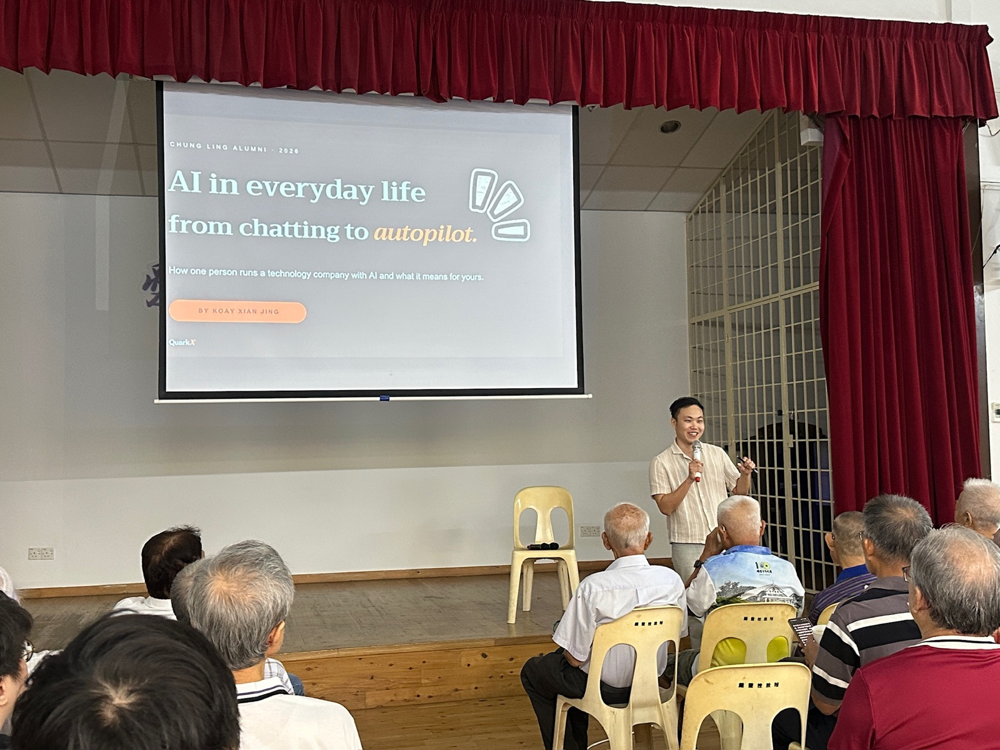

Talks and training
Talks, training, workshops.
For conferences, associations and in-house teams: talks that show real systems, training your people can use the next morning, and workshops built around your own operation.
For general audiences and associations
AI in everyday life: from chatting to autopilot
A general-audience talk on where AI already sits in everyday life, and what it can honestly do for a household or a business today.

Nobody in the room could tell a real photograph from a generated one. Yet everyone in it had already used AI a dozen times that day, unlocking a phone, rerouting around traffic, without once calling it AI. The talk starts from that gap.
The talk covers
- The AI you already use every day, without calling it AI
- Three levels of using it: ask, build a tool, autopilot
- Your expertise plus AI, from the kopitiam to the factory
- AI at home: health, family photos, a child's homework
- When AI is confidently wrong, and how to check it
- What does not need AI at all
For engineers and technical teams
Engineering pragmatic AI systems, local architectures, and automated operational pipelines
For engineers, technical directors and operations heads who need the practical realities rather than the marketing.
Most enterprise failures do not come from the models. They come from integration friction: connecting messy operational data safely into legacy databases, holding the line on privacy, and proving the numbers are right.
The session covers
- Connecting messy operational data safely into legacy systems
- Running models on-premise instead of renting someone else's cloud
- The validation layers that decide whether a system may act
- Keeping security, compliance and explainable decisions intact
Speaker
Koay Xian Jing
Founder and Principal AI Architect, QuarkX Sdn. Bhd.
Invitations
Looking for a speaker who will show the failure modes?
Tell us the audience and the room, and the material gets rebuilt around them.
Or email contact@quarkx.tech. We usually confirm within a few days.